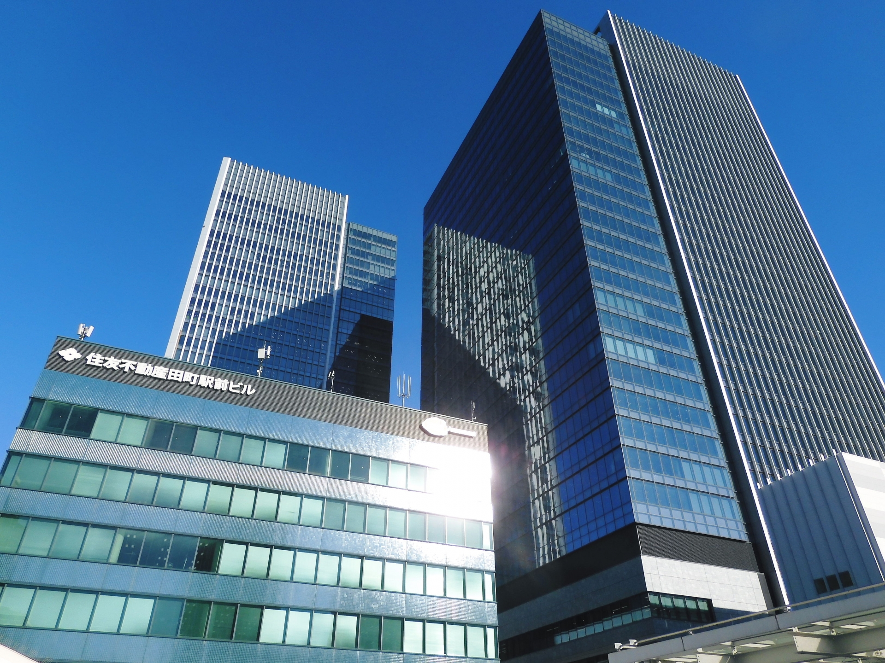
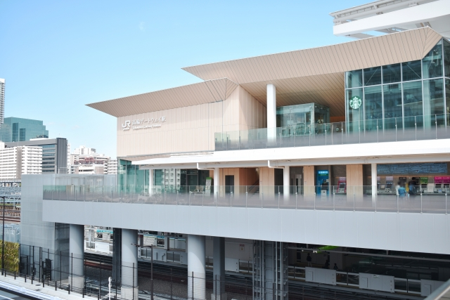

LOCATION
周辺環境

田町駅（徒歩13分）
都心の躍動と自然を愉しむロケーション。
現地周辺にはスーパーマーケットや病院、学校など、生活に必要な施設が揃います。
徒歩13分にある田町駅は現在再開発が進み、より便利に進化を続けています。
駅近くに商業施設が複数あり、飲食店、スーパーマーケットなども徒歩圏にあるため、より快適な暮らしを享受できます。
また2020年に新しく開業されたJR山手線高輪ゲートウェイ駅も生活圏にあります。駅前ではこちらも再開発が進行中であり、今後さらなる発展が期待され、注目されています。
利便性に富んだ立地でありながら、一方で公園や海の自然も身近にあります。都会の先進性と自然の癒しが調和した満ち足りた日常が実現できることでしょう。
-

高輪ゲートウェイ駅（徒歩22分）
-
グランパークタワー（徒歩12分）
-
msb Tamachi（徒歩14分）
※写真はイメージです。 -
田町タワーモール（徒歩21分）
※写真はイメージです。 -
芝浦中央公園（徒歩10分）
-
東京タワー（徒歩41分）
-
港区立芝公園（徒歩35分）
-
みなとパーク芝浦（徒歩20分）
-
ピーコックストア 芝浦アイランド店（徒歩10分）
※写真はイメージです。
LIFE INFORMATION
-
-
ショッピング施設
- 肉のハナマサ 芝浦店
- 9分
- ピーコックストア 芝浦アイランド店
- 10分
- まいばすけっと 芝浦3丁目店
- 11分
- ライフムスブ田町店
- 14分
- マルエツ プチ 港南シティタワー店
- 16分
- オーケー 札の辻店
- 16分
- セブン-イレブン 芝浦４丁目店
- 5分
- ナチュラルローソン 芝浦海岸通店
- 6分
- ドラッグセイムス 芝浦海岸通店
- 5分
- msb Tamachi
- 14分
- 品川シーズンテラス
- 16分
- 田町タワーモール
- 21分
-
教育施設
- デイジー保育園 芝浦
- 4分
- 芝浦橋保育室
- 8分
- 太陽の子 芝浦三丁目保育園
- 10分
- 港区立芝浦アイランドこども園
- 10分
- 港区立芝浦幼稚園
- 5分
- 聖徳大学三田幼稚園
- 19分
- 港区立芝浦小学校
- 5分
- 港区立港南中学校
- 17分
-
-
-
医療機関
- 芝浦ホームクリニック
- 5分
- 芝浦アイランド内科クリニック
- 6分
- 芝浦ゲートウェイクリニック
- 8分
- 芝浦クリニック
- 9分
- ありいずみ内科
- 10分
- 田町内科 芝浦メディカル 港区呼吸器内科
- 10分
- 高櫻内科・脳神経クリニック
- 11分
- 東京横浜TMSクリニック︎みなと東京院
- 12分
- 有明みんなクリニック 田町芝浦院
- 15分
-
その他
- 港区立港南図書館
- 14分
- 三田警察署 八千代橋地域安全センター
- 8分
- 港区立芝浦港南区民センター
- 5分
-